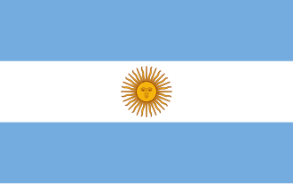

Argentina
Continente: América
Participaciones: 18
Mejor resultado: Campeón

Brasil
Continente: América
Participaciones: 22
Mejor resultado: Campeón

Francia
Continente: Europa
Participaciones: 16
Mejor resultado: Campeón